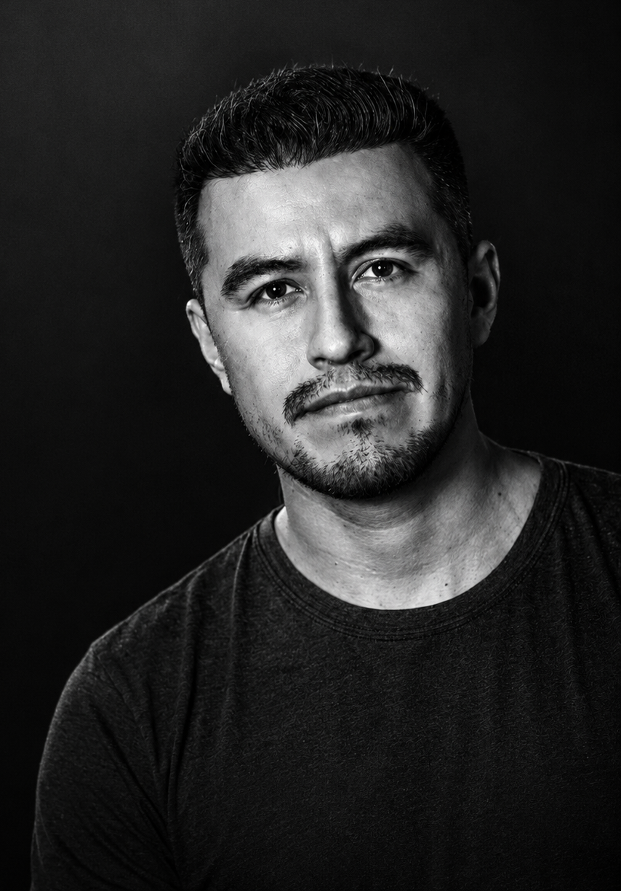

ABOUT / FX + TECHNICAL ART
Building the
impossible.
Artist's eye.
Technical mind.
With a background in Electronic Engineering and a long-standing passion for visual effects, Anthony approaches each project from both an artistic and technical perspective.
His work focuses on simulations such as fire, smoke, fluids, destruction, particles, and volumetric effects, primarily using Houdini.
Before pursuing visual effects professionally, he worked for nine years as an Electronic Engineer. That experience shaped the way he approaches complex problems today: breaking them into smaller systems, understanding how each part works, and finding efficient solutions. It also strengthened his interest in automation and tool development — because sometimes the best workflow is the one you do not have to repeat twice.
His interest in visual effects began in 2006, when he started learning CG independently and exploring how the images and effects he admired were created. Years later, he had the opportunity to pursue that goal more fully at Gnomon, where he has continued developing his skills in FX, procedural workflows, lighting, rendering, compositing, and technical art.
Anthony enjoys working at the intersection of art, technology, and storytelling. Whether building a destruction system, designing a magical effect, developing a Python tool, or taking a shot through final compositing, his goal is always the same: create work that serves the story while finding elegant solutions behind the scenes.
